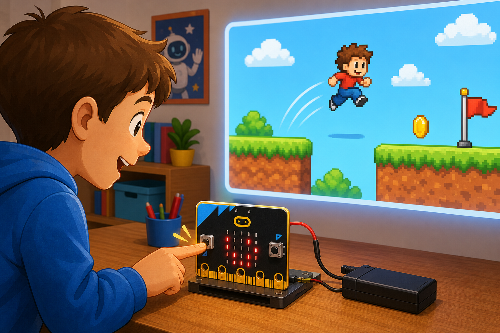

Yes / no quiz
DetectWhich button is pressed
→
DecideAnswer is A or B
→
DoShow a tick or cross
The micro:bit has two buttons, A and B, that your code can react to when they are pressed.
They are built into the board, so there is nothing to wire up. Button A is on the left and Button B is on the right.
Your projects can use the buttons to choose options, control characters, or trigger actions.

from microbit import *
while True:
if button_a.was_pressed():
display.show("A")
if button_b.was_pressed():
display.show("B")input.onButtonPressed(Button.A, function () {
basic.showString("A")
})
input.onButtonPressed(Button.B, function () {
basic.showString("B")
})is_pressed() to check if a button is held down right now, or was_pressed() to catch a press that already happened.